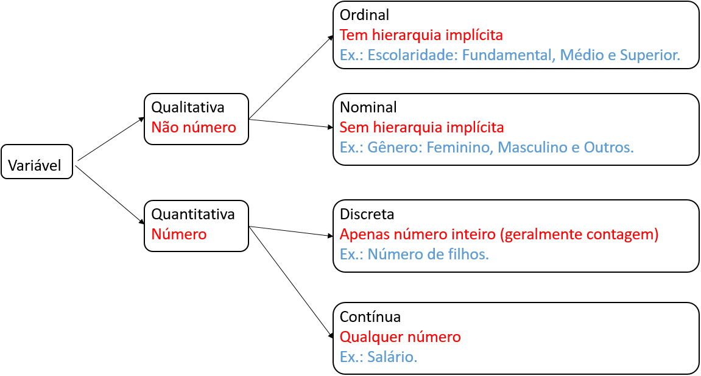
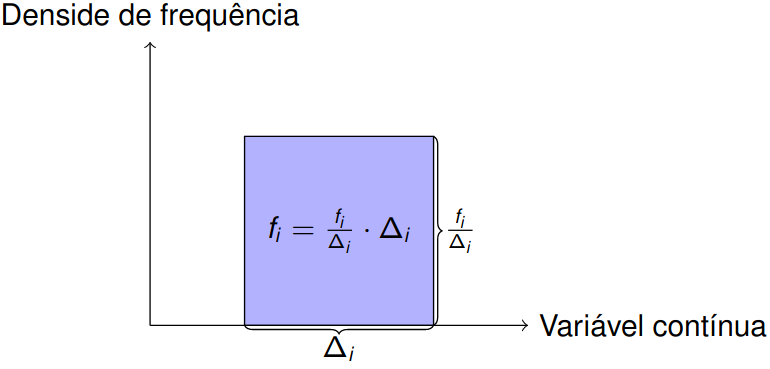
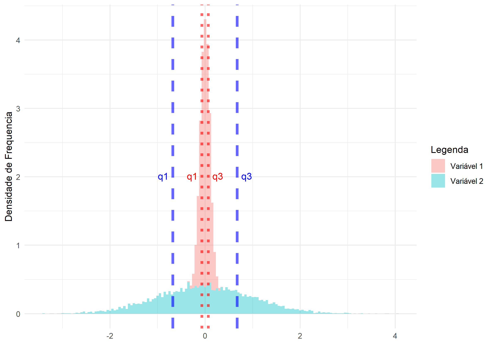

Estatística básica usando o R: bem-vinde ao tidyverse
Parte 2
Exploração e visualização de dados
Gilberto e Carolina
Conceitos básicos
Começamos com alguns conceitos básicos, que usaremos durante todo esse curso.
- População: Todos os elementos ou indivíduos alvo do estudo;
- Amostra: Parte da população;
- Parâmetro: característica da população (grandeza);
- Estimativa: característica da amostra. Usamos a estimativa para aproximar o parâmetro;
- Variável: característica de um elemento da população (mensurando ou analito). Geralmente usamos uma letra maiúscula do alfabeto latino para representar uma variável (mensurando ou analito), e uma letra minúscula do alfabeto latino para representar o valor de uma variável para um elemento (indicação) da população.Por exemplo, podemos representar a variável “Teor de hidrocloro” por \(X\) e um indicação da amostra por \(x=25,1\) mg/comprimido.
Classificação de variáveis
Classificação de variáveis.
Tabela de distribuição de frequência
variável qualitativa
A primeira coisa que fazemos é contar!
| \(X\) | frequência | frequência relativa | porcentagem |
|---|---|---|---|
| \(B_1\) | \(n_1\) | \(f_1\) | \(100 \cdot f_1\%\) |
| \(B_2\) | \(n_2\) | \(f_2\) | \(100 \cdot f_2\%\) |
| \(\vdots\) | \(\vdots\) | \(\vdots\) | \(\vdots\) |
| \(B_k\) | \(n_k\) | \(f_k\) | \(100 \cdot f_k\%\) |
| Total | \(n\) | \(1\) | \(100\%\) |
Em que \(n\) é o tamanho da amostra.
Geralmente não incluímos a coluna de frequência relativa.
Tabela de distribuição de frequência
variável qualitativa
Pacotes: janitor
library(readxl)
library(janitor)
library(tidyverse)
df_oscars_pixar <- read_xlsx("data/raw/dados_pixar_oscars.xlsx")
df_oscars_pixar |>
tabyl(tipo_premio_indicado) |>
arrange(desc(n)) |>
adorn_totals() |>
adorn_pct_formatting(digits = 2) |>
rename(
"Indicação ao Oscar" = tipo_premio_indicado,
"Frequência" = n,
"Porcentagem" = percent
)## Indicação ao Oscar Frequência Porcentagem
## Melhor Filme de Animação 18 22.50%
## Melhor Roteiro Adaptado 16 20.00%
## Melhor Roteiro Original 15 18.75%
## Melhor Canção Original 8 10.00%
## Melhor Edição de Som 8 10.00%
## Melhor Trilha Sonora 8 10.00%
## Melhor Mixagem de Som 4 5.00%
## Melhor Filme 2 2.50%
## Outro 1 1.25%
## Total 80 100.00%Tabela de distribuição de frequência
variável quantitativa discreta
Pacotes: janitor
## Marchas Frequência Porcentagem
## 3 15 46.88%
## 4 12 37.50%
## 5 5 15.62%
## Total 32 100.00%Tabela de distribuição de frequência
variável quantitativa contínua
Primeiro agregamos os valores em intervalos.
- Usamos inter usadas na área de pesquisa
- Regra de Sturge: \(1 + \log_2(n)\) (\(n\) é o tamanho da amostra)
df_trabalhador <- read_xlsx("data/raw/companhia_MB.xlsx")
k <- round(1 + log2(nrow(df_trabalhador)))
faixas <- seq(
from = min(df_trabalhador$salario),
to = max(df_trabalhador$salario),
length.out = k
)
df_trabalhador <- df_trabalhador |>
mutate(faixa_salario = cut(
salario,
breaks = faixas,
include.lowest = T,
right = F
))Tabela de distribuição de frequência
variável quantitativa contínua
df_trabalhador |>
tabyl(faixa_salario) |>
adorn_totals() |>
adorn_pct_formatting(digits = 2) |>
rename(
"Salário" = faixa_salario,
"Frequência Absoluta" = n,
"Porcentagem" = percent
)## Salário Frequência Absoluta Porcentagem
## [4,7.86) 10 27.78%
## [7.86,11.7) 12 33.33%
## [11.7,15.6) 7 19.44%
## [15.6,19.4) 6 16.67%
## [19.4,23.3] 1 2.78%
## Total 36 100.00%Medidas de Resumo
Medidas de posição e dispersão
A ideia é encontrar um ou alguns valores que sintetizem todos os valores.
Medidas de posição (tendência central)
A ideia é encontrar um valor que representa bem todos os valores.
- Média: \(\overline{x} = \dfrac{x_1+\cdots+x_n}{n}\)
- Mediana: valor que divide a sequência ordenada de valores em duas partes iguais.
Medidas de dispersão
A ideia é medir a homogeneidade dos valores.
- Variância: \(s^2 = \dfrac{(x_1 - \overline{X})^2 + \cdots + (x_n - \overline{X})^2}{n-1}\);
- Desvio padrão: \(s = \sqrt{s^2}\) (mesma unidade dos dados);
- coeficiente de variação \(cv= \dfrac{s}{\overline{x}} \cdot 100\%\) (adimensional, ou seja, “sem unidade”)
Medidas de resumo
Pacote: dplyr
df_trabalhador |>
group_by(escolaridade) |>
summarise(
media = mean(salario),
mediana = median(salario),
variancia = var(salario),
dp = sd(salario),
cv = dp / media
)## # A tibble: 3 × 6
## escolaridade media mediana variancia dp cv
## <chr> <dbl> <dbl> <dbl> <dbl> <dbl>
## 1 ensino fundamental 7.84 7.12 8.74 2.96 0.377
## 2 ensino médio 11.5 10.9 13.8 3.72 0.322
## 3 superior 16.5 16.7 20.3 4.50 0.273Quantis
Ideia
\(q(p)\) é um valor que satisfaz:
- \(100\cdot p\%\) das observações é no máximo \(q(p)\)
- \(100\cdot (1-p)\%\) das observações é no mínimo \(q(p)\)
Alguns quantis especiais
- Primeiro quartil: \(q_1 = q\left(\frac{1}{4}\right)\)
- Segundo quartil: \(q_2 = q\left(\frac{2}{4}\right)\)
- Terceiro quartil: \(q_3 = q\left(\frac{3}{4}\right)\)
Quantis
df_trabalhador |>
group_by(escolaridade) |>
summarise(
q1 = quantile(salario, 0.25),
q2 = quantile(salario, 0.5),
q3 = quantile(salario, 0.75)
)## # A tibble: 3 × 4
## escolaridade q1 q2 q3
## <chr> <dbl> <dbl> <dbl>
## 1 ensino fundamental 6.01 7.12 9.16
## 2 ensino médio 8.84 10.9 14.4
## 3 superior 13.6 16.7 18.4Exportando tabelas
pacote gt
Pacote gt
Vamos usar o pacote gt para customizar a apresentação de uma tabela.
A ideia do pacote gt é melhorar apresentação por camadas.

Para mais detalhes, visite pacote gt.
Exemplo
Vamos customizar e salvar a tabela com as medidas de resumo para a variável salario do conjunto de dados companhia_MB.xlsx.
Cabeçalho e subcabeçalho
tab_header: permite incluir cabeçalho (title) e subcabeçalho (subtitle)gtsave: permite salvar tabela em formatohtml(página web),tex(\(\LaTeX\)) ertf(word)
library(gt)
gt_tab <- gt(tab) |>
tab_header(
title = md("**Escolaridade dos funcionário:** _Empresa tal_ "),
subtitle = md("**Criado por:** _Gilberto Sassi_")
)
gtsave(gt_tab, filename = "output/gt_tab.html")
gtsave(gt_tab, filename = "output/gt_tab.tex")
gtsave(gt_tab, filename = "output/gt_tab.rtf")Incluindo fonte dos dados
| Escolaridade dos funcionário: Empresa tal | ||||||
|---|---|---|---|---|---|---|
| Criado por: Gilberto Sassi | ||||||
| escolaridade | media | mediana | dp | cv | q1 | q3 |
| ensino fundamental | 7.836667 | 7.125 | 2.956464 | 0.3772604 | 6.0075 | 9.1625 |
| ensino médio | 11.528333 | 10.910 | 3.715144 | 0.3222620 | 8.8375 | 14.4175 |
| superior | 16.475000 | 16.740 | 4.502438 | 0.2732891 | 13.6475 | 18.3775 |
| Exemplo didático: Tabela 2.1. | ||||||
| Livro: Estatística básica. | ||||||
Rótulo para grupo de linhas
tab_row_group: permite colocar rótulo para um grupo de linhas
| Escolaridade dos funcionário: Empresa tal | ||||||
|---|---|---|---|---|---|---|
| Criado por: Gilberto Sassi | ||||||
| escolaridade | media | mediana | dp | cv | q1 | q3 |
| Nível: ensino universitário | ||||||
| superior | 16.475000 | 16.740 | 4.502438 | 0.2732891 | 13.6475 | 18.3775 |
| Nível: ensino básico | ||||||
| ensino fundamental | 7.836667 | 7.125 | 2.956464 | 0.3772604 | 6.0075 | 9.1625 |
| ensino médio | 11.528333 | 10.910 | 3.715144 | 0.3222620 | 8.8375 | 14.4175 |
| Exemplo didático: Tabela 2.1. | ||||||
| Livro: Estatística básica. | ||||||
Rótulo para grupo de colunas
tab_spanner: permite colocar rótulo para grupo de colunas
| Escolaridade dos funcionário: Empresa tal | ||||||
|---|---|---|---|---|---|---|
| Criado por: Gilberto Sassi | ||||||
| Variável | media | dp | cv | Quantis | ||
| escolaridade | q1 | mediana | q3 | |||
| Nível: ensino universitário | ||||||
| superior | 16.475000 | 4.502438 | 0.2732891 | 13.6475 | 16.740 | 18.3775 |
| Nível: ensino básico | ||||||
| ensino fundamental | 7.836667 | 2.956464 | 0.3772604 | 6.0075 | 7.125 | 9.1625 |
| ensino médio | 11.528333 | 3.715144 | 0.3222620 | 8.8375 | 10.910 | 14.4175 |
| Exemplo didático: Tabela 2.1. | ||||||
| Livro: Estatística básica. | ||||||
Movendo colunas
col_move_to_start: move uma ou mais colunas para o início da tabelacol_move_to_end: move uma ou mais colunas para o fim da tabelacol_move: move uma coluna ou mais colunas depois uma determinada coluna
| Escolaridade dos funcionário: Empresa tal | ||||||
|---|---|---|---|---|---|---|
| Criado por: Gilberto Sassi | ||||||
| Variável | media | cv | dp | Quantis | ||
| escolaridade | q1 | mediana | q3 | |||
| Nível: ensino universitário | ||||||
| superior | 16.475000 | 0.2732891 | 4.502438 | 13.6475 | 16.740 | 18.3775 |
| Nível: ensino básico | ||||||
| ensino fundamental | 7.836667 | 0.3772604 | 2.956464 | 6.0075 | 7.125 | 9.1625 |
| ensino médio | 11.528333 | 0.3222620 | 3.715144 | 8.8375 | 10.910 | 14.4175 |
| Exemplo didático: Tabela 2.1. | ||||||
| Livro: Estatística básica. | ||||||
Atualização dos rótulos das colunas
cols_label: permite atualizar os rótulos de colunas
| Escolaridade dos funcionário: Empresa tal | ||||||
|---|---|---|---|---|---|---|
| Criado por: Gilberto Sassi | ||||||
| Variável | Média | Coeficiente de variação | Desvio padrão | Quantis | ||
| Escolaridade | Primeiro quartil | Segundo quartil | Terceiro quartil | |||
| Nível: ensino universitário | ||||||
| superior | 16.475000 | 0.2732891 | 4.502438 | 13.6475 | 16.740 | 18.3775 |
| Nível: ensino básico | ||||||
| ensino fundamental | 7.836667 | 0.3772604 | 2.956464 | 6.0075 | 7.125 | 9.1625 |
| ensino médio | 11.528333 | 0.3222620 | 3.715144 | 8.8375 | 10.910 | 14.4175 |
| Exemplo didático: Tabela 2.1. | ||||||
| Livro: Estatística básica. | ||||||
Formatação de valores nas colunas
fmt_number: formatação de valores numéricos em uma tabela
| Escolaridade dos funcionário: Empresa tal | ||||||
|---|---|---|---|---|---|---|
| Criado por: Gilberto Sassi | ||||||
| Variável | Média | Coeficiente de variação | Desvio padrão | Quantis | ||
| Escolaridade | Primeiro quartil | Segundo quartil | Terceiro quartil | |||
| Nível: ensino universitário | ||||||
| superior | 16,48 | 0,27.100% | 4,50 | 13,65 | 16,74 | 18,38 |
| Nível: ensino básico | ||||||
| ensino fundamental | 7,84 | 0,38.100% | 2,96 | 6,01 | 7,12 | 9,16 |
| ensino médio | 11,53 | 0,32.100% | 3,72 | 8,84 | 10,91 | 14,42 |
| Exemplo didático: Tabela 2.1. | ||||||
| Livro: Estatística básica. | ||||||
Gráficos
ggplot2
Gráficos no R
Pacote:
ggplot2Permite gráficos personalizados com uma sintaxe simples e rápida, e iterativa por camadas
Começamos com um camada com os dados
ggplot(dados), e vamos adicionando as camadas de anotações, e sumários estatísticosUsa a gramática de gráficos proposta por Leland Wilkinson: Grammar of Graphics
Ideia desta gramática: delinear os atributos estéticos das figuras geométricas (incluindo transformações nos dados e mudança no sistema de coordenadas)
Para mais detalhes, você pode consultar
ggplot2: elegant graphics for data analysis e documentação doggplot2
Estrutura básica ggplot2
Você pode usar diversos temas e extensões que a comunidade cria e criou para melhorar a aparência e facilitar a construção de ggplot2.
- Lista com extensões do
ggplot: extensões doggplots
Indicação de extensões:
- Temas adicionais para o pacote
ggplot2:ggthemes - Gráfico de matriz de correlação:
ggcorrplot - Gráfico quantil-quantil:
qqplotr
Gráfico de barras
Gráfico de Barras no ggplot2
- função:
geom_bar(). Para porcentagem:geom_bar(x = <variável no eixo x>, y = ..prop.. * 100). - Argumentos adicionais:
fill: mudar a cor do preenchimento das figuras geométricascolor: mudar a cor da figura geométrica
Rótulos dos eixos
- Mudar os rótulos:
labs(x = <rótulo do eixo x>, y = <rótulo do eixo y>, title = <legenda do gráfico>) - Trocar o eixo-x pelo eixo-y:
coord_flip()
Salvar gráficos
ggsave(): salvar gráficos nos formatospdf,pngejpeg
Gráfico de barras
library(ggplot2)
library(ggthemes)
df_iris <- read_xlsx("data/raw/dados_iris.xlsx")
ggplot(df_iris) +
geom_bar(aes(x = especies), fill = "blue", color = "red") +
labs(x = "Espécies", y = "Frequência absoluta") +
theme_gdocs()
ggsave("figures/barras.jpeg")
ggsave("figures/barras.png")
ggsave("figures/barras.pdf")Histograma
Para variávieis quantitativas contínuas usamos histograma.
- O histograma é um gráfico de barras contíguas em que a área de cada barra é igual à frequência relativa.
- Cada faixa de valor \([l_{i-1}, l_{i}), i=1, \dots, n,\) será representada por um barra com área \(f_i, i=1, \dots, n\).
- Como cada barra terá área igual a \(f_i\) e base \(\Delta_i = l_i - l_{i-1}\), e a altura de cada barra será \(\frac{f_i}{l_i - l_{i-1}}\).
- \(\frac{f_i}{l_i - l_{i-1}}\) é denominada de densidade de frequência.
- Podemos fornecer:
bins: número de intervalosbinwidth: tamanho dos intervalosbreaks: limites dos intervalos
Histograma
Histograma
df_iris <- read_xlsx("data/raw/dados_iris.xlsx")
k <- round(1 + log2(nrow(df_iris)))
ggplot(df_iris) +
geom_histogram(aes(x = comprimento_sepala, y = ..density..),
bins = k, fill = "blue", closed = "left") +
theme_gdocs() +
labs(
x = "Comprimento sépala",
y = "Densidade de frequência",
title = "Histograma"
)Diagrama de caixa
medida de dispersão: distância entre \(q_1\) e \(q_3\) pequena indica homogeneidade
Diferença de quartis: \(dq = q_3 - q_1\)
Diagrama de caixa
Assimetria à direita ou positiva:
- frequências diminuem à direita no histograma
- \(q_2\) perto \(q_1\): \(q_2 - q_1 < q_3 - q_2\)
Assimetria à esquerda ou negativa: frequências diminuem à esquerda no histograma
- frequências diminuem à direita no histograma
- \(q_2\) perto \(q_3\): \(q_2 - q_1 > q_3 - q_2\)
Diagrama de caixa
Assimetria
Diagrama de caixa

Diagrama de caixa
Gráficos lado a lado com patchwork
patchworkpermite colocar gráficos lado a lado com os operadores binários+(ao lado) e\(embaixo)- Mais detalhes em documentação
patchwork
df_enem <- read_csv2("data/raw/enem_salvador_2021.csv")
g1 <- ggplot(df_enem) +
geom_boxplot(aes(x = "", y = NU_NOTA_MT)) +
labs(x = "", y = "Notas em matemática", title = "Boxplot") +
theme_gdocs()
g2 <- ggplot(df_enem) +
geom_boxplot(aes(x = "", y = NU_NOTA_LC)) +
labs(x = "", y = "Notas em linguagens e códigos", title = "Boxplot") +
theme_gdocs()
g1 + g2Gráficos lado a lado com patchwork
Gráficos
Duas variáveis
Gráfico de dispersão
Ideia: estudar a associação entre duas variáveis quantitativas
Gráfico de dispersão
Gráfico de dispersão
Gráfico de barras
Ideia
Sejam \(X\) e \(Y\) duas variáveis qualitativas com seguintes valores possíveis
- \(X\): \(A_1, \dots, A_r\)
- \(Y\). \(B_1, \dots, B_s\)
Desejamos estudar a associação entre \(X\) e \(Y\).
Associação entre \(X\) e \(Y\)
Suponha que \(A_i\) tenha porcentagem \(f_i\cdot 100\%\). Então, \(X\) e \(Y\) são:
- não associados se ao conhecermos o valor de \(Y\) para um elemento da população, continuamos com a porcentagem \(100\cdot f_i \%\) deste elemento ter valor de \(X\) igual a \(A_i\)
- associados se ao conhecermos o valor de \(Y\) para um elemento da população, alteramos a porcentagem \(100\cdot f_i\%\) deste elemento ter valor de \(X\) igual a \(A_i\)
Gráfico de barras
df_enem <- read_csv2("data/raw/enem_salvador_2021.csv")
ggplot(df_enem) +
geom_bar(aes(x=TP_COR_RACA, fill=TP_ESCOLA), position = "fill") +
labs(x = "Raça", y = "Porcentagem") +
scale_y_continuous(labels = scales::percent)+
scale_fill_manual(name = "Tipo de escola", values = c("blue", "orange", "magenta")) +
theme_gdocs()Gráfico de barras
Gráfico de barras
Podemos agrupar as barras por grupos para analisar a associação entre duas variáveis qualitativas.
Gráfico de barras
Diagrama de caixa
Podemos comparar medianas de diferentes grupos usando o diagrama de caixa.
Diagrama de caixa

Exploração e visualização de dados usando R